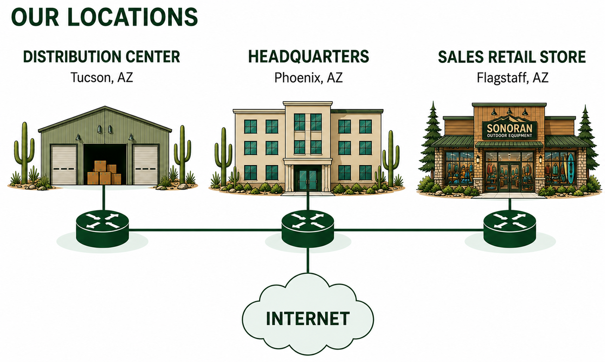

Headquarters
Phoenix, Arizona
Corporate leadership, Information Technology, finance, human resources, and centralized Internet services.


Sonoran Outdoor Equipment
Authorized employees may access enterprise documentation, engineering standards, and assigned Enterprise Change Requests through the Network Operations Center.
“Every great adventure begins with a reliable network.”
— Pace, SOE Mascot
Employee Access
Enter your first name as your Employee ID and then enter the assigned NOC password.
Authorized personnel only. Unauthorized access is prohibited.
Employee Onboarding
Welcome to the Sonoran Outdoor Equipment Enterprise Infrastructure team. Review each orientation section before beginning your first Enterprise Change Request.
Sonoran Outdoor Equipment is an Arizona-based retailer specializing in hiking, camping, climbing, and outdoor recreation equipment. The company relies on a secure and dependable enterprise network to support employees, customers, inventory systems, sales operations, and communication between locations.
The company operates three locations across Arizona. The Phoenix Headquarters provides centralized business and technology services, including the company’s Internet connection. The Tucson Distribution Center supports inventory and shipping operations, while the Flagstaff Sales Retail Store serves customers in northern Arizona.

Phoenix, Arizona
Corporate leadership, Information Technology, finance, human resources, and centralized Internet services.
Tucson, Arizona
Inventory management, warehouse operations, shipping, receiving, and regional product distribution.
Flagstaff, Arizona
Customer sales, product demonstrations, point-of-sale services, and local inventory management.
Sonoran Outdoor Equipment depends on its network infrastructure to keep business operations running across all three locations.
The Enterprise Infrastructure team is modernizing the company network to improve security, reliability, visibility, and scalability.
You have joined Sonoran Outdoor Equipment as a Junior Network Engineer assigned to the Enterprise Infrastructure team. You will work under the direction of senior engineers to implement and validate approved network changes.
Network changes must be planned, approved, implemented, tested, and documented. Each Enterprise Change Request follows the same structured process.
Understand the operational problem, technical requirement, or expansion need driving the change.
Examine the scope, implementation requirements, affected devices, risks, and validation criteria.
Complete required pre-change verification and document the condition of the network before making changes.
Apply only the approved configurations and follow the required implementation sequence.
Use connectivity tests, show commands, and technical evidence to confirm that the change works as intended.
Save required evidence, update documentation, and complete the Enterprise Validation Assessment.
Engineering Resources
Review the engineering standards, planning documents, and other enterprise resources before implementing an approved network change.
Required Standard
Review enterprise naming conventions, VLAN standards, security requirements, device standards, and documentation expectations.
Download Standards GuideRequired Planning Document
Develop and maintain the enterprise IPv4, IPv6, VLSM, VLAN, interface, and default-gateway assignments.
Download Addressing PlanNetwork Engineering Department
Select the assigned change request, review the business requirements, and complete the approved implementation.
ECR-001
ECR-002
ECR-003
ECR-004
ECR-005
ECR-006
ECR-007
ECR-008
ECR-009
ECR-010
ECR-011
ECR-012